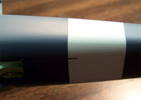
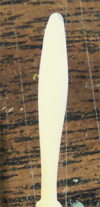

1/48 Scale Massi Model Fiat RS.14 Fast Maritime Reconnaissance Seaplane
Images, text and model Copyright © 2003 by Matt Swan
And so it begins, another large scale project. As with any models kit prior to beginning construction the parts should be washed with warm soapy water to remove any mold release agents or debris from the manufacturing process. It is even more important that the parts be washed with a resin kit, as the possibilities of heavier release agents being present are great. I mixed a small amount of liquid dish soap in a large glass baking pan with hot tap water, about 140 degrees Fahrenheit where I could swish the parts and not worry about losing any small pieces. Each piece was rinsed under cold water and set on a cotton towel to air-dry. That is pretty much how day one of construction went.
I spent several hours carefully examining the parts and removing flash with a razor knife, fine sand paper and diamond files. I removed casting blocks and pour points off of the larger pieces and cleaned up all the connecting points. As with any conventional model, construction will begin with the interior. The directions list four general color codes and for the interior that is “Sky”. I coated the interior with a good coat of Testors primer gray then applied the Polly Scale Sky. The cockpit floor pan, seats, control columns and waist gun positions were done with Sky. The floor pan and completed seats were coated with Future then washed with a sludge wash to highlight the details.
My reference book shows a chain drive system over the top of the control column for the aileron control. Since this was a very visible item and would be easily seen from outside the model I looked for ways to replicate it. Ultimately I ended up cutting a thin piece of foil off my stock material, laying it over a block of modeling clay and using a razor knife to make impressions into the foil. This piece was then bent into a long “U” shape and super-glued over the control column. I was careful to not apply a lot of pressure to the foil so as to not remove the knife blade impressions. I painted this piece with Gunze-Sangyo Burnt Iron.
As the kit interior is very plain I started to collect some detail parts to make it a little more “busy”. I still had some brass seat belt buckles left over from the Koster Fw-200 so those were combined with some foil strips to make seat belts. Considering the time period and type of aircraft I just made lap belts, no shoulder harnesses. From the parts box I found some leftover brass rudder pedals that came with the Fw-189 and was lucky enough to come up with four to complete the pilots and co-pilot position. I used some short lengths of fuse wire to make the posts for the rudder pedals.
Click on any of the above pictures for larger images
The instrument panel is the next area to get some attention. I really like to bring instrument panels to life. This panel is painted sky on the backside and flat black on the front. The instrument faces were done with flat white then Reheat instrument faces were applied with a liberal dose of Micro-Sol setting solution. There are three small panels that go in the nose for the bombardier station and they got the same treatment. The side panels in the nose have no detail cast into them at all so I painted the faces white then used some of the larger square decals from Reheat. After the Micro-Sol had dried I touched up the edges with some flat black on a fine brush.
Continuing with my mission to dress up the cockpit I am using a selection of fuse wire pieces painted in various shades of dark gray to make umbilical cables. The first cable will run from the front side bombardier’s consol along an overhead beam and into the body of the plane. The pictures I’ve found show a complex bombsite that I will replace with a spare PE bombsite from that leftover Fw-189 sheet. This I attached to the front bombardiers consol in a similar position to the one in the reference picture. More fuse wire is used along the sidewalls in the nose. Using more scrap brass and some plastic sheet stock I constructed a small instrument panel to mount above the bombardier’s position per the reference photos. Another thin piece of fuse wire runs from this panel into the body of the plane. Another heavier piece is set onto the backside of the main dash and fed under the floor pan. A few more odd PE parts are attached to the side of the bombardier’s seat slide as release or adjustment levers and the dress up program is complete.
Click on the pictures for larger images.
The cockpit assembly was super-glued in place by laying a good bead of glue along the interior alignment tabs, holding the assembly in place while putting a drop of accelerator onto the bead. The halves were dry fit immediately to be sure everything was lining up properly then additional glue was applied to the back wall area of the cockpit. I test fit the dash to find that my rudder pedal addition was going to cause some trouble. I had to trim the bottom edge of the dash just slightly to get it to clear the tops of the rudder pedals then it was super-glued in place. Again the fuselage was dry fit to make sure there was no binding going on. So far all the pieces are fitting very nicely and looking into the front window areas the craft has a nice, busy look to it.
To quickly sum up the additions to the interior we have:
1. Simulated chain on control columns.
2. Foil seat belts with brass buckles from spares box.
3. Reheat instrument faces on all panels and dash.
4. PE rudder pedals from spares box.
5. PE bombsite from spares box.
6. Scratch built secondary bombardiers panel.
7. Fuse wire umbilical cables added in various areas.
Continuing with typical construction methodology I’m moving on to the waist gun positions. I am not happy at all with what the kit offers here. The kit gun tubs are rectangular with both long sides bowed in whereas the actual gun tubs were more rounded, mounted flush to the exterior wall of the fuselage and had two small support legs. The armature that the kit provides to support the gun appears accurate. At first I thought I might try to salvage the kit gun tubs but have decided that I will be way ahead of the game to simply scratch build them. I don’t feel like doing that today so I will take a look at the wing connections instead.
I learned my lesson with the S-38 and super gluing large pieces. It may be just fine for sticking the little things together but when it comes to the big stuff you’ve got to go with the epoxy. I’m using Loctite five-minute epoxy to attach the wings. A couple of fit problems are coming to light right away along with a larger problem. First, there is a small step on the top of the Port wing and I’m trying to adjust for it by sanding a small amount off the tops of the mounting pegs. I’m also sanding the top of the fuselage joint lightly to try and blend the seam in. The bigger problem is the wing size itself. The entire wing is about 3 millimeter narrow overall. There is a step back at both the front and the back of the wing to the fuselage and to make matters even worse, the end of the flap carries onto the fuselage part of the wing root and the panel lines do not meet, not even close and this is apparent on both wings. I’m going to have to shave the fuselage to meet the wing, fill the panel lines and rescribe them.
The directions show the fuselage being assembled then the wings going on. From the earlier interior pictures you can see that there is an alignment/mounting stub on each side that will protrude into the cabin area and be visible from the outside when completed. The prospect of covering this up with dental tools through the cockpit windows is not very appealing. I taped the fuselage together securely and test fit the wing to check how the dihedral would set up and was pretty happy with it and this prompted me to attach the wing first, clean up the interior area then close the fuselage, hope this approach works because I used a bunch of epoxy to attach those wings. I also cut a little off each of the forward mounting stubs to facilitate the final clean-up. Although the epoxy set up well it did remain soft for a while so I set the entire assembly aside to cure overnight and will start sanding tomorrow. I’m going to have to get back to those gun tubs shortly also.
To rectify the gun tub situation I am using a selection of Evergreen plastic strips and rod. I’ve measured the general length and width of the area I want the tub to cover and cut out rectangular pieces of heavier strip for the flooring. The two outside corners were filed down then thin strip was bent around them and glued to the edge. Using my sprue cutters I cut the strip off at an approximate angle then inserted the tub into the fuselage to correct the angle.

I glued a piece of styrene rod to the tub floor with Tenex 7R then leaned it over to the correct angle with the fuselage wall while the glue was still setting. The excess rod was cut off flush with the bottom of the gunner’s window. The gun and gun armature will be mounted after the model is painted. The gunner’s cushion is formed from some heavier Evergreen strip with the hard edges and corners filed off. At this point I was considering just how much interior detail work I really wanted to do so I closed the fuselage and looked through the windows. From what I could see just about anything additional that I did would be hidden upon completion. The gun tubs and cushions were painted and super-glued in place. The short support legs were fashioned from heavy fuse wire.
Now I’m moving back to the pesky wing fit problem. The trailing edge was fairly easy to deal with by just shaving it down with a razor and thinning the new trailing edge a bit to match the wing. The forward area was much thicker and required some judicious work with a Dremel and teardrop grinding stone. Once the majority of the excess material was removed I shifted over to medium grit sandpaper then a fine sandpaper to finish it off. The lower flap lines needed to be filled with superglue and re-scribed but we’re only talking about less than a half an inch of line on each side so it’s not that bad. I’m also starting to work on the engines. Each bank of cylinders gets mounted on a toothpick for handling and painted a base coat of Model Master Steel. I added ignition harnesses from fine red fuse wire and assembled the engines per the instructions. The interiors of the nacelles and the front and back of the mounting plate were painted RLM 02. The engines will be sludge washed and put aside for later attachment.
It’s time to close the fuselage permanently. I’ve run a good bead of epoxy around the edges of the fuselage except for the window framing in the nose. This I will secure later. The fuselage halves were lined up and wrapped with masking tape and small clamps. Pressure was applied to a few strategic areas to help things line up properly and five minutes later the epoxy had set. The window frames in the nose were now lined up by gently flexing them with tweezers and super-glueing them into place. The elevators were attached with super-glue and accelerator. The main seam was first cleaned with a razor then sanded and looked pretty good with very little work. There are still a few small seam areas that need more attention but it is coming along rather nicely.
I set the model on my work surface and aligned the rudder perpendicular to the table then measured the wing tips for dihedral - right on the money!
I spent nearly an entire evening going over the seams carefully cleaning them up with a razor knife and various grades of sandpaper. Finally, satisfied with that part of the job I can now turn my attention to the floats. In the reference pictures there are two things very visible; first is a fine cable that runs in the opposite direction of the cast support cable and second are short rudder control cables. For the main float cable I simply drilled through the top-mounting pad and threaded a piece of invisible thread into it. One end was secured to the top of the float with super-glue then, while putting some tension on the thread the other end was glued. The rudder cables will be short pieces of fuse wire.
After the floats were tested for fit I had to sand the contact point of one just a little then applied a good layer of super-glue into the contact point and set it in place. I ran a drop of accelerator into the joint and the placed the second float in the same manner. I was a little concerned about the weight of this model on the float legs until I took a good, close look at the white metal struts. Usually when we talk about white metal parts we’re thinking of soft pewter but these struts are actually made from pot metal and are very hard. If I had really been paying attention I would have drilled out the mounting points for the struts but I was not paying attention. Rather than try to drill these large holes now that the model is nearly complete I simply cut off the tabs from the struts and glued them in place. I carefully worked some glue around the connecting points with a dental pick and set it with accelerator. This blended the contact points in nicely. One needs to be careful here, the struts are of two different sizes; the sort ones are for the front while the long ones are for the rear. I of course installed both long struts in front then was wondering why the heck the rear struts were so short. Fortunately the super-glue had not set up completely and I was able to break the struts free and start over again. The armament tub was glued on at this point also.
The armament tub is a rather interesting feature of this aircraft. It is designed to hold bombs, depth charges or a torpedo and can be quickly removed from the aircraft and replaced with a loaded tub vastly improving the sortie turn-around time.
Things are moving along very quickly now, for a kit of this caliber I had expected things to take a lot longer. The engines were placed on the back-plates and the cowlings were glued in place. Both completed assemblies were glued to the wing mountings and the aileron hinges were placed. After making another surface inspection I went to the tail control surfaces and installed all the mass balancers. I’m saving the wing and fuselage antennae masts for the very last as I would probably break them off a half dozen times before finishing this.
Now begins the tedious job of packing all those openings with tissue paper prior to painting. I torn up several pieces of tissue and inserted them one piece at a time with fine tweezers alternating with drops of water. About and hour and a half later I was ready to glue the antennae masts on. Yeah, they would have been trashed by this time.
And off we go to the paint room. I’m using Model Master Primer Gray cut 50% with lacquer thinner. I’m shooting it with my Badger 360 airbrush and have the pressure set just under 20 PSI. Using a primer before painting your top colors is very important. It gives the top coats something to bond to, allows you to use less paint to achieve a good color density and will show you all the defects that need to be addressed prior to applying your color coats. Also, the color of primer that you use will influence the final color of your paint job.
The primer has revealed several areas that need attention. First and not surprising were some seam areas on the top and bottom of the fuselage that had appeared to be good after sanding but still needed a very fine amount of filler. The amount needed was so little that I simply brushed a couple of coats of unthinned primer into the seam then sanded it smooth. Second and more unexpected were several casting seams on the floats and engine cowlings. These were shaved off with a razor knife then sanded smooth.
I had left off the oil coolers from the bottoms of the engine cowlings until after the primer was done. The interior of the coolers were done in a gray/brown mixture then strapped into place with strips of masking tape so they could be properly aligned. Little dabs of super-glue were used to hold them in place and then a more substantial bead of super-glue was put in place with a dental pick. The point where the oil coolers meet with the wing area has to be the single worst fitting point on the entire model. A terrible gap was formed here and had to be filled with successive layers of super-glue and filed down with a flat diamond file.
After all this filling and sanding had been finished she went back to the paint room for another coat of primer. Still have a seam issue under the fuselage and will have to layer in a little more paint before top-coat colors can go on. Also noticed a casting seam on the tip of the Starboard wing that needs to be sanded off. One more round of sanding and priming and I should be ready to start mixing my final colors.
Progress has been a little slow on this project recently and that is mostly a result of the more mundane aspects of life intruding upon the modeling schedule. When I built the Fw-200 Condor I ran into a paint shortage situation and cautioned the reader to be prepared and have the paint stocks you will need in advance. I did not take my own advice well. I had intended to mix my own paint from stock and match it to color chips. I was able to achieve a light gray for the underside that I liked but no matter what I did I just could not get the right tone to the upper dark gray so here I sit, waiting for paint to arrive from Texas.
There are a few things I can do in the meantime though. First I’ll paint the center section of the aft fuselage Testors flat white enamel in preparation for masking then the rudder is done with Gunze-Sangyo Black Green. I’ll let these dry until the new paint arrives then mask them off with masking tape and tissue paper. I love the painting process, laying down a color then masking it off and laying down the next color. The most exciting part is when it’s all done and the masks come off. The anticipation of how it will look and if everything came together as planned, it’s like that person at the plastic surgeon as the bandages come off, will it be a work of beauty or a horrible monstrosity?
This is what she looks like at this point…..
Squadron has delivered my paint right on schedule and I am ready to proceed. The rudder and the mid fuselage area have had several days to cure and are ready to be masked off. The rudder is easy, I just cut some long thin strips of masking tape and ran them along the hinge line then laid larger pieces of masking tape over the rest of the rudder. I used the thin strips so they could flex easily around the top area of the hinge line which bends slightly. I measured the white fuselage strip on the three view verses the distance from the edge of the gunner’s window and the beginning of the tail fin. On the drawing I had 11mm from the window edge to the edge of the white area, 14mm of white area and 10mm to the beginning of the tail fin. That’s a total of 35mm. So now I divide 14 (the white area) by 35 (the total area) for a result of .4 or 40%. I also divide 11 and 10 by 35 for .3143 and .3125. Now I go to the model and measure the total area from the window edge to the beginning of the tail fin and get 62mm. Multiply this number by .4 gives me 24.8mm, which I round up to 25. Now I know how wide my strip will be. Take 62 and multiply by .3143 and I get 19.48mm, which I will round down to 19 this being the distance from the window edge to the beginning of the white area. Just to check everything I multiply 62 by .3125 to get 19.93mm, which I can measure from the beginning of the fin to confirm my strip size. Boy, that was a lot of work, wasn’t it?
Alright, back to masking. I use the same technique as before to mask the white area. Two long thin strips mark the outer edges and the center section is covered with larger strips of tape. Due to the shape of the fuselage the tape wants to buckle in a couple of areas and I use my tweezers to pinch it so no paint will blow underneath it.

All the seams have been double checked and the entire model has been dusted with compressed air. I am ready to start painting. I begin with Model Master Enamel Aircraft Gray thinned about twenty-five percent with lacquer thinner. Air pressure is set at 18 PSI and I lay down two good coats of color on all the underside surfaces. This is allowed to dry overnight then I move on with Polly Scale acrylic Dark Sea Gray for the upper surfaces. This is thinned about the same ratio as the enamel was but using Windex as my thinning agent. I also added two drops of a flow aid to the thinned mixture as Polly Scale acrylics tend to clog the airbrush tip. The top color was somewhat difficult to do as a result of the floats and supporting structure. It was more than the typical top and bottom colors. We have top and bottom colors on each of the floats, on all the struts and on the main fuselage so there are a lot of demarcation lines and some over-spray is unavoidable. After the Dark Gray had overnight to dry I came back with the Aircraft Gray thinned out to about 50% and with air-pressure adjusted down to 10 PSI and touched up the over-spray areas.
 Now I can start to remove the masking tape and packing material in the fuselage. First thing I saw was a little bleed that had occurred into the white fuselage band along the upper panel lines on both sides. This is easily repaired with a fine brush and ultimately there will be a wash on that also. I did not realize just how much tissue paper I had packed into this back when I was getting ready to prime it. This picture to the left is just from the nose cone only. There were a variety of little tissue threads stuck to edges that needed to be cleaned up and the edge lines around the window areas had to be touched up with a brush but overall it is looking very nice.
Now I can start to remove the masking tape and packing material in the fuselage. First thing I saw was a little bleed that had occurred into the white fuselage band along the upper panel lines on both sides. This is easily repaired with a fine brush and ultimately there will be a wash on that also. I did not realize just how much tissue paper I had packed into this back when I was getting ready to prime it. This picture to the left is just from the nose cone only. There were a variety of little tissue threads stuck to edges that needed to be cleaned up and the edge lines around the window areas had to be touched up with a brush but overall it is looking very nice.
While this is curing I start looking at the clear parts and the top turret. I also have sanded the side window hatches and have them ready for paint. They will be one of the last pieces put in place. The turret glazing and nose glazing are on a single sheet so that is where I’ll start. Using my Dremel with a cut-off wheel I cut the major pieces of excess plastic off then shift to the flat edge of the wheel to trim the turret glazing to the final size. The interior slots are opened with the tip of my razor knife then finished with a series of diamond files. The nose piece is too large for the framing so I will sand it down on a large sheet of sandpaper until it conforms to the frame work of the aircraft. The glazings are dipped in Future and placed on tissue paper and covered with a cup to dry.


The top colors have had a day to cure now and the entire aircraft is coated with Future floor finish. The Future is applied at 100%, no thinning at all. Air pressure is set back to 18 PSI and the gun is about 4 to 6 inches from the model surface. I apply a wet coat to the entire bottom area and let that dry for a few hours then come back and coat the top surfaces. I’m putting this on very heavy, just short of the point at which it will run or pool. This takes some practice to be able to judge the concentration level so if you are not real experienced with Future you may want to use slightly lighter coats and use more of them. Once she is dry to the touch she is moved back to the model room to finish curing.
Yet another day has passed and now I will apply the decals. The decals with this kit behave very nicely. They do not want to grab or tear but slide nicely into place and react well to both Micro-Set and Micro-Sol. The tail marking are a combination of four decals, two on each side that overlap each other. The white cross overlaps the opposite one and the national shield is placed on top of the white cross. There are some small numbers for the side that are not visible in the pictures and the modeler has a choice of high or low visible numbers and can choose the aircraft number to be placed. There are no stencils but then in all reference photos there are no stencil markings to be seen.
And here she is so far, another coat of Future and the weathering begins.
I love to get feedback from readers, it helps keep me motivated on projects and sometimes provides ideas for new techniques. Sometimes my mistakes are pointed out. See that decal on the left wing? Well guess what, it’s all wrong. Seems the Italian markings are handed (left and right hand) and the instructions showed this but I failed to pay attention to that point. Fortunately it was pointed out to me before the sealing coat of Future went on (thanks Randy). I have the top decal on the bottom and vise versa.
Now I have to fix this. There are no spare decals and I am not about to try to get another set from Italy so I must lift these decals that have been put down with both Micro-Set and Micro-Sol and have had more than 24 hours to dry. I start by wetting the decal with some Micro-Set to help soften it then wet it heavily with water and let it set for a few minutes. Now, using a wide soft brush, I gently push the bristles against the edge of the decal to start it to lift. This takes patience. Shortly the edge of the decal lifts and I continue to wet it and work the bristles further under the decal. Progress is slow but sure and after about fifteen minutes this decal has been lifted without taking any damage. I transfer it to a sheet of stock plastic with lots of water to wait for me to remove the second decal. The second one comes off in the same manner and takes about fifteen minutes also. The wing surfaces are wiped off and the decals are replaced on the correct surfaces. After they have had a few minutes to set I apply some Micro-Sol with the same soft brush that I used to lift them with. This sets the project back one day while everything dries back down but the correction has been made and now I have total confidence in my ability to lift decals in the future. See, there is a bright side to everything.
24 hours have past and I can start to work on some panel lines. This is a very conventional approach (for me). I’m using a standard sludge wash made from Grumbacher acrylic paste, tap water and liquid dish soap. For more details on this mixture you can read about it in The Basics of Weathering. I’m working through the wing upper surfaces and the upper nose areas first. The sludge wash fades quite a bit when it dries but the final dull coat will make it stand out nicely. It only takes a few minutes for the wash to flash dry and then I can begin to wipe the surfaces with a damp tissue compress. The tissue leaves an assortment of fine lint threads behind but once the surface has dried I can dust this off with a wide, soft brush – the same brush that I used to lift those decals with.
There are several other detail items that still need to be worked on and I will do these between weathering steps on the main aircraft. The two items of interest to me at this time are the top turret that I’ve already gotten the clear parts ready for masking and the propellers. The instructions do not give any good reference for masking the turret dome so I have to go back to my copy of Ali D’Italia and find some pictures to determine the correct framing patterns. The propellers have issues of their own, there is a horrible seam line that runs down the length of each blade that must be sanded off, and these blades are very thin and delicate. One blade on each propeller is warped and needs to be straightened under hot water and if that is not enough, one blade has a large chip missing from the tip.

The first thing that I will deal with is the chipped propeller blade. After the propeller has been washed in warm soapy water to remove any mold release residues and dried I can begin. First I apply a droplet of medium super-glue to the chip and place a drop of accelerator further up the blade and allow it to run down to the glue. Now I lay a piece of 220 grit automotive emery cloth down on the edge of my work table and begin to sand the tip of the blade. When it nears the original resin material I shift over to 400 grit emery cloth to finish the job. This is emery cloth, not sand paper so it is not as aggressive and the 400 gives a nicely polished surface ready for paint. The rest of the propeller is not ready however. There is a nasty seam that must be sanded off of each blade and around the shaft mount. This is done with the 220 grit emery cloth folded over and finished with the 400 grit.
Once both propellers have been cleaned up they have to be straightened out. I cannot count the number of times I have seen people ask on forums how to straighten resin and the answer is always the same – hot water. That’s a little vague fellas, just how hot is hot and when do you cause irreversible damage? This is exactly how I dealt with it: I took a porcelain cup and filled it with hot tap water then micro-waved it to raise the temperature. I used a candy thermometer to check my temperature and when I reached 180 degrees Fahrenheit I was ready to start. I worked in the kitchen where I could have running cold water at my disposal. I held the bent blade into the hot water and swirled it around for about 20 seconds letting it acquire some heat. This is a very thin part so the time required is short. If it had been a heavier part I would have let it soak longer. I pulled it out of the hot water and pinched the blade with my fingers and bent it back to the desired shape and while holding it in this shape I submerged it in cold running water to solidify the piece. Two blades on one assemble and one on the other needed to be straightened.
Now I am ready to start painting. The propellers will be done with Alclad Aluminum. I mount each prop on the end of a toothpick so as to have a good solid painting handle and head to the paint room. I like to use Krylon Gloss Black in a rattle can for my Alclad primer but shooting from the can is not a good idea. I use a drinking straw pressed over the tip of the spray head and shoot the paint into a film canister (this is called decanting) where it is collected and then transferred to my Badger 360 airbrush. Each propeller and it’s spinner cover are primed, given an opportunity to dry then given two coats of Alclad.
The backsides of the spinner covers will be done with Model Master Steel as well as the blade mounts at the propeller shaft and then washed with a rust wash. Now I can move on to the top turret.
You ever have one of those days when you lose that one little piece? I thought I was having one of those days when I could not find the counter balance for the top machine gun. I couldn’t find it anywhere then I got to thinking that I could not recall having ever seen it. I went back to the preview article and examined the parts lay-out and sure enough – no counter balance. At least I had not lost it and it is a simple piece that I will be able to scratch build so it’s no big deal. The frame for the gun is painted with Polly Scale Light Gray acrylic and the gun itself is done with Gunze-Sangyo Burnt Iron then dry brushed with Model Master Steel. The counter balance will be fashioned from some stretched sprue.
A few details remain to be finished on the main model. The waist guns and armatures are installed and the sliding cover plates for the gun windows are ready to be placed. The reference photos show these plates cocked out at the aft end and a bit of a shaft is visible between the plate and the fuselage so this is made from some stretched sprue and the plates are glued in place. All pictures that I’ve found of these planes show it to be fairly clean and lacking in severe weathering so I will restrain myself in the weathering process. I add a light dusting of Tamiya X-19 Smoke aft of the cowling flaps and back from the exhaust tubes under the wings. Using some Model Master Steel on a stubby brush I dry brush some chipping around the front crew access hatch, the engine covers and access panels and around the waist gun plates. I keep this very light. A quick dust-off with compressed air and it is ready for a good coating of Polly Scale clear flat.
After looking at several reference photos of the top turret I masked it and shot it with the dark Sea Gray. It is very visible into the turret and there is no detail below the gun so I went back to the spares box to dress this area up. I came across a resin turret seat from the Fw-200 that had been an alternate and it fit beautifully into the Fiat turret so I painted it up and super-glued it in place. This improved the interior look quite a bit looking in from the top, front or waist gun windows. The counter balance was made from stretched sprue and inserted after the dome glazing was glued in place.
Now I am moving on to what is most likely the hardest aspect of this kit – the front glazings. These glazings are a series of individual pieces that each must be cut out from the main sheet then sanded and trimmed to fit each opening on the model. I start with the two rectangular pieces behind the cockpit to get a feel for it. Oh Yeah, this is going to be fun.
Each piece is trimmed to just fit into the correct opening without any pressure then it is Futured and set aside. It is important to keep them in the correct order as the left and right pieces are not interchangeable even though they look virtually identical. I have about 8 hours invested in getting these pieces trimmed and sanded. After each piece has had 12 hours (overnight) to cure they get placed. I use thin strips of masking tape to hold each pane in place and have put a bead of Testors Clear Parts Cement around the edge of each opening. I cannot work in series here as the tape from one piece will interfere with the next so its one piece on the left then one on the right then one in the nose. I give each piece about an hour for the glue to harden then remove the tape. Where the tape crossed over the glue line there is some glue crude but the glue is still slightly pliable and can be trimmed up with a razor easily.
Now that the cockpit panes are all in place I can put the aerials in place. For aerial wire I’m using invisible thread drawn through a slot cut into the tip of a black permanent marker to color it. A little superglue and accelerator is used to attach it and the attachment points are touched with a little flat white for the insulators.
The last of the nose panels have been put in place and the framing has been touched up with a fine brush. I used a piece of stretched sprue to make the pitot-tube mast and a piece of fuse wire bent in a “U” for the dual tips.
The last item to be dealt with is the propellers. They have already been painted and have had plenty of time to cure, the spinner covers have been glued in place and the hubs have been washed with a rust wash. The decals are placed ½ inch from the tips. Since these were done with Alclad there is no topcoat of Future, which would change the appearance of the Alclad finish. This aircraft uses counter-rotating propellers so take care that you glue them on the correct engines.
This sure has been an interesting build. This has been the most complex resin kit I’ve completed to date (the S-38 is the most complex I’ve started) and it has been a learning experience. Using five-minute epoxy was definitely a good move. I’ve had to straighten resin pieces in the past and have always used straight hot tap water but moving up to 180-degree water made that job so much easier. Considering the price of this kit I was somewhat disappointed to find there was a piece missing (Turret gun counterweight) and that there was no pitot tube included especially since it is such a prominent piece and there is not radio directional beacon housing that would be mounted ventrally behind the weapons pod.
Those individual pieces for the glazings certainly were a project with nearly eight hours of trim time and then installation time, whew, some real work there. The instructions were good and the decals were very good. It is indeed a pricey kit but overall I think it was worth the investment. And there you have it, one complete Massi Models 1/48 scale resin RS.14 Fast Maritime Reconnaissance Seaplane.
Completed 11/9/03


{kind=link}
{kind=link}
{kind=link}
{kind=link}
{kind=link}
{kind=link}
{kind=link}
{kind=link}
{kind=link}
{kind=link}
{kind=link}
{kind=link}
{kind=link}
{kind=link}
{kind=link}